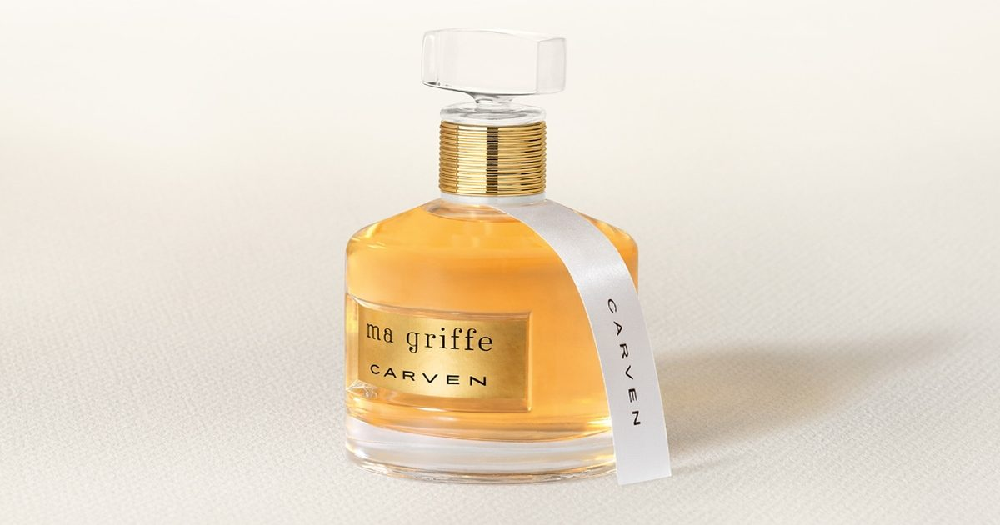

Выручка Bogart в первом полугодии упала на 7,4% на фоне слабого потребительского спроса
Bogart Group сообщила о выручке в размере 114,7 млн евро в первой половине 2026 года, что на 7,4% ниже текущих обменных курсов и на 5,3% ниже аналогичных показателей.
Богарт объяснил снижение неблагоприятной экономической и геополитической средой, которая продолжает оказывать давление на потребительские расходы, особенно в розничном бизнесе, где группа также проводит текущую реорганизацию сети.
Тем не менее, группа подчеркнула устойчивость своей фра